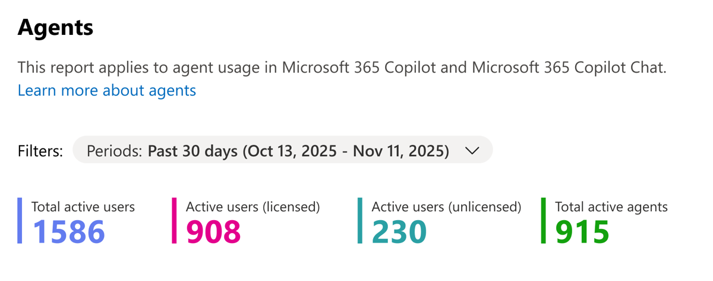
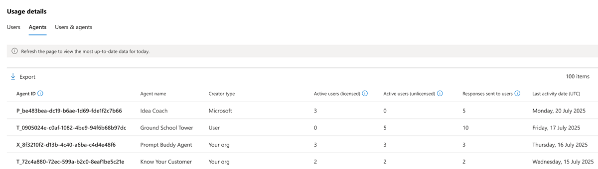
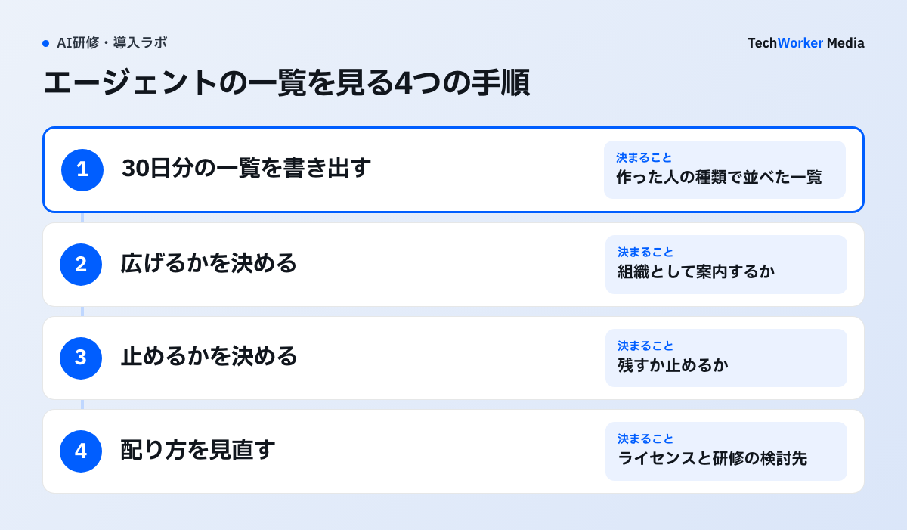

Copilot Chat や Microsoft 365 Copilot を配った会社では、社員が作ったエージェントが少しずつ増えていきます。これまでの管理センターの「Agents」レポートは、社内で作ったエージェントだけが対象でした。誰がどのエージェントを使ったかも見られませんでした。11月4日のリリースノートで、新しいレポートが案内されました。旧版の説明ページには、新版を使うよう書かれています。この記事では、見える数字と開き方、広げる・止めるの判断への使い方を説明します。
11月4日、エージェントの利用状況レポートが新しくなった
原文“The report will be scoped to include agents in Microsoft 365 Copilot and Copilot Chat with usage by both M365 Copilot licensed and unlicensed users.”
日本語訳このレポートは、Microsoft 365 Copilot と Copilot Chat のエージェントを対象とし、M365 Copilot のライセンスがある利用者とない利用者の両方の利用を含みます。

画面の上で期間を選び、その下に4つの数字が並びます。左から、エージェントを使った人の合計、そのうちCopilotのライセンスがある人、ない人、使われたエージェントの数です。
「使った人」は、エージェントに質問して回答を受け取った人を指します。画像の数字と2025年の期間は、Microsoftの説明ページに載った画面の例です。自社の値は、管理センターで開くまで分かりません。
旧版の説明ページには、今は「deprecated（非推奨）」と書かれ、新版を使うよう案内があります。旧版は Microsoft や他社が作ったエージェントを数えず、人ごとの利用も見られませんでした。新版では、この2つが見られます。
開き方と、作った人の種類
Microsoft 365 管理センターで「Reports」から「Usage」を開き、「Microsoft Copilot」の「Agents」を選びます。説明ページでは、今はプレビューの扱いです。
期間は過去7日と30日から選べます。旧版にあった90日と180日は、今後の更新で加えると書かれています。使ってから1時間以内に、数字に反映されると説明されています。
レポートを見るのに要る管理者の役割は、利用状況レポート全般の説明ページに載っています。利用者の名前は、初期設定では伏せて表示されます。名前を出す設定は、グローバル管理者が変えます。Microsoftは、権限の小さい役割を使うよう勧めています。グローバル管理者は、ほかの役割で対応できない緊急時に限るとしています。
エージェントは、作った人の種類で分けて数えます。種類は次の4つです。ほかに、すべてをまとめて絞り込む「Any」があります。
| 表示 | どんなエージェントか（説明ページ） |
|---|---|
| Your Users | 社員が agent builder などで作ったもの。組織のカタログには載らず、本人が使うか、リンクで社内の人に共有する |
| Your org | 社員が Copilot Studio や Microsoft 365 Agents Toolkit で作り、管理者が組織での利用を承認したもの |
| Microsoft | Microsoftが作ったもの |
| Third-party | Microsoft以外の開発者が作って公開し、管理者が承認したもの |
画面の下には、3つの一覧があります。人ごとの一覧には、使ったエージェントの数、受け取った回答の数、最後に使った日が出ます。エージェントごとの一覧には、ライセンスがある人とない人の利用者数、回答の数、最後に使われた日が出ます。もう1つは、人とエージェントの組み合わせごとの一覧です。

この画面では、「Creator type」の列で作った人の種類が分かります。画面の例では「Your Users」が「User」と表示されています。左上の「Export」で、一覧を書き出せます。エージェント名や数字は、説明ページの例です。
数に入らない利用と、合計が合わないとき
Cowork の利用と、Teams で使う SharePoint のエージェントは、このレポートの数に入りません。期間中にライセンスを付け外しすると、合計と内訳が合わないことがあります。
Cowork の使われ方は、別の「Cowork usage report」で見ると説明ページに書かれています。SharePoint のエージェントを Teams で使った分も、今は数えられていません。社内でよく使うエージェントが一覧に無いときは、この2つに当たらないかを先に確かめます。
説明ページによると、期間の途中でライセンスを付けたり外したりすると、ある人とない人の和が合計の人数を上回ることがあります。上の画面の例でも、合計と内訳の和は一致していません。合計と内訳は、別々の数として読むのが安全です。
リリースノートと説明ページでは、書き方に違いがあります。リリースノートは作った人の種類を「Microsoft partners」とし、場所を「Copilot management」の下と書いています。説明ページは「Third-party」とし、場所を「Reports」の「Usage」としています。この記事は、11月9日に更新された説明ページに合わせました。
見る順番：広げる・止める・配り方を見直す
TechWorkerは、30日分のエージェントの一覧を書き出し、3つの判断に分けて見る使い方を勧めます。Microsoftが定めた手順ではありません。

1つ目は、広げるかどうかです。「Your Users」で利用者が多いエージェントは、個人が作ってリンクで広がったものです。中身と使っているデータを確かめ、組織として案内するかを決めます。
2つ目は、止めるかどうかです。最後に使われた日が古いエージェントは、作った人に続けるかを聞き、残すか止めるかを決めます。期間内に一度も使われなかったエージェントが一覧に載るかは、説明ページから確かめられませんでした。一覧に無いエージェントは、管理センターのエージェントの管理画面と見比べます。
3つ目は、ライセンスと研修の配り方です。ライセンスがない人の利用者が多いエージェントは、Copilot Chat で使われています。有償のライセンスを配る先や、研修で使い方をそろえる部署を考える材料になります。人ごとに見るには、名前を出す設定と、自社のライセンスの割り当て表との突き合わせが要ります。
この3つの判断と順番は、TechWorkerの提案です。レポートが自動で判断するわけではありません。1か月後に同じ一覧を書き出すと、判断の後に使われ方が変わったかを比べられます。
今日やること：30日分の一覧を書き出す
- 管理センターで「Reports」→「Usage」→「Microsoft Copilot」→「Agents」を開き、期間を過去30日にします。
- エージェントごとの一覧を書き出し、作った人の種類で並べます。
- 「Your Users」で利用者が多いものと、最後に使われた日が古いものに印を付けます。
- ライセンスがない人の利用が多いエージェントを、ライセンスと研修の検討に回します。
- 1か月後に同じ一覧を書き出し、変わった所を見ます。
- エージェントの公開や共有のルールも確かめたい場合は、研修サイトの生成AI利用の安全度チェックを使います。
Copilot全体の利用レポートと定着の進め方はCopilotが定着しない原因と対策で扱っています。エージェントを作る側の統制はCopilot Studioのガバナンス設計、研修の費用はCopilot研修の費用の比較にまとめています。
出典と確認範囲
確認日：2026年11月11日。レポートの対象・開き方・数の定義は、Microsoftのリリースノートと説明ページに基づきます。見る順番と今日やることは、TechWorkerの提案です。TechWorkerの環境でこのレポートを開いた記録はまだありません。自社の画面での表示は、管理者が確かめてください。